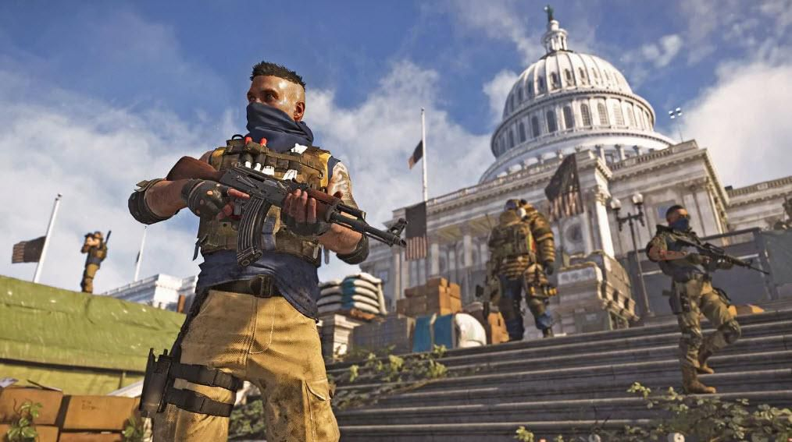
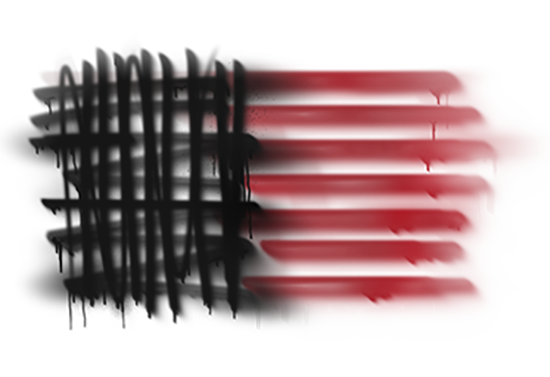

A játékban több különböző bandba lehet ütközni, akik a Hyenas, True Sons és az Outcast, majd idővel egy különleges egység, a Black Tusk is fegyevrt fog a játékos ellen. Rouge Agents, azaz Áruló Ügynökök is meg jelenhetnek, akik el árukták a Divisoint. Huters, Vadászok, iszonyatosan veszélyes ellenfelek, akik valamilyen titkos úton érhetők el. A bandák nincsenek jó viszonyban egymással, ha véletlenül össze találkoznak elkezdenek harcolni egymással.
True Sons |
|---|
|  |
Típus |
| Ellenséges frakció |
|  |
| Elhelyezkedés |
|
Caption Hill (HQ) West Potomac Park West Station East Mall Southwest United ironworks |
| Vezetők |
|
Antwon Ridgeway Linette "Dusk" Edwards |
| Célok |
| Fasiszta katonai szabály Washington felett |
| Egyéb nevezetes tagok |
|
Sergeant Mike Snow Colonel Morozova Major Williams Captain Fieser Lieutenant Gray |
| Rouge ügynökök |
|
Ryan "Mercury" Chang Linette "Dusk" Edwards |
Az Igaz Ifiak egy katona szerevet ami a JTF dezertőrjeiből és lázadókból áll, akik harctudásukat használva uralják DC nagyobb területeit. Remekül szervezik soraik, folytonosan folytják el a más frakciókat.
Antwon Ridgeway, volt JTF parancsnok vezetésével hasonlítanak egy hadvezér által irányított frakcióra. Igazi erejük harci képességeikben és könyörtelenségükben rejlik. Az SHD ügynököknek ezért fokozott óvatossággal kell ellenük eljárni.
Január elején a Marylani nemzeti gárda ezredesét Antwon Ridgeway-t nevezték ki a Dél-keleti régió JTF helyszíni parancsnokává. Elődje mikor autó balesetben meghalt tábornoki rangot kapott. Egyre agresszívabban lépett fel és gyakran hallos intézkedéseket hajtott végre a lázadókkal, fosztogatókkal és mmég a barátságos tüntetőkkel szemben is. Többször is megrovást kapott és a Roosevelt Island-on a tettei okozták bukását. Hadbíróság elé küldték, megfosztották rangjától és a JTF börtönébe zárták. Rövid idővel kiszabadult és ekkor alaput meg a True Sons. Célja az, hogy akik börtönbe záratták, azokat hamar halálbüntetéssel sujtsa.